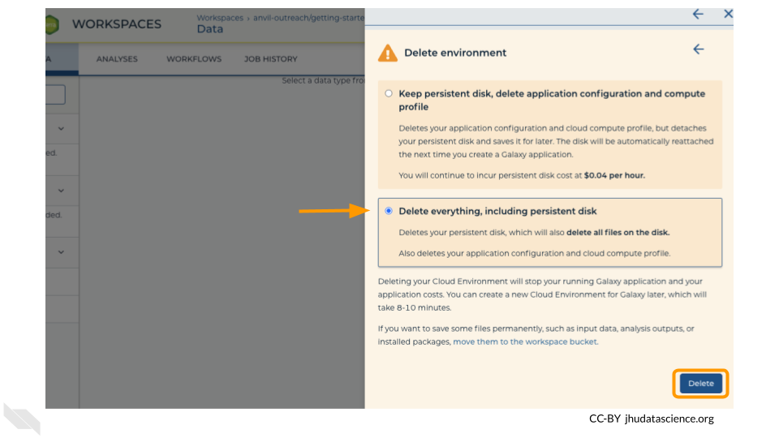

Chapter 7 Programming Platforms
This section provide a general overview of how to use Galaxy on AnVIL.
7.1 Video overview on using Galaxy
Here is a video tutorial that describes the basics of using Galaxy on AnVIL.
7.1.1 Objectives
- Start compute for your Galaxy on AnVIL
- Run tool to quality control sequencing reads
- Stop compute to minimize expenses
7.1.2 Slides
The slides for this tutorial are are located here.
7.2 Starting Galaxy
Note that, in order to use Galaxy, you must have access to a Terra Workspace with permission to compute (i.e. you must be a “Writer” or “Owner” of the Workspace).
Open your Workspace, and click on the “Environment configuration” button, a cloud icon on the righthand side of the screen.

Under Galaxy, click on “Create new Environment”. Click on “Next” and “Create” to keep all settings as-is. This will take 8-10 minutes.

Click on “Open Galaxy” when the environment is ready.

7.3 Navigating Galaxy
Notice the three main sections.
Tools - These are all of the bioinformatics tool packages available for you to use.
The Main Dashboard - This contains flash messages and posts when you first open Galaxy, but when we are using data this is the main interface area.
History - When you start a project you will be able to see all of the documents in the project in the history. Now be aware, this can become very busy. Also the naming that Galaxy uses is not very intuitive, so you must make sure that you label your files with something that makes sense to you.

On the welcome page, there are links to tutorials. You may try these out on your own. If you want to try a new analysis this is a good place to start.
7.4 Deleting Galaxy
Once you are done with your activity, you’ll need to shut down your Galaxy cloud environment. This frees up the cloud resources for others and minimizes computing cost. The following steps will delete your work, so make sure you are completely finished at this point. Otherwise, you will have to repeat your work from the previous steps.
Return to AnVIL, and find the Galaxy logo that shows your cloud environment is running. Click on this logo.

Next, click on “Settings”. Click on “Delete Environment”.

Finally, select “Delete everything, including persistent disk”. Make sure you are done with the activity and then click “Delete”.

7.5 AnVIL Account Setup
In order to run your analyses, you will use the AnVIL cloud computing platform. The AnVIL (Analysis Visualization and Informatics Lab-space) platform is specially designed for analyzing biological data, and is used by scientists doing all sorts of biological research.
AnVIL in a nutshell
- Behind the scenes, AnVIL relies on Google Cloud Platform to provide computing infrastructure. Basically, AnVIL lets you “rent” computers through the internet. The analysis is run on the rented computer. AnVIL lets you see the results in your browser.
- AnVIL uses Terra to provide many computational tools useful for biological data analysis, such as RStudio, Galaxy, and Jupyter Notebooks. Terra takes care of installing these tools so you can use them right away.
7.5.1 Create Google Account
First, you will need to set up a (free) Google account.
A Google account usually looks like “myname@gmail.com”. Alternatively, you can enable Google for an existing non-Gmail email address using these instructions.
If you do not already have a Google account that you would like to use for accessing AnVIL, create one now.
7.5.2 Log In to Terra
Next, make sure you can log in to Terra – you will use Terra to perform computations on AnVIL.
You can access Terra by going to anvil.terra.bio. Open Terra, and you should be prompted to sign in with your Google account.
7.6 Cloning the AnVIL Workspace
This will not work until your instructor has given you permission to spend money to “rent” the computers that will power your analyses (by adding you to a “Billing Project”).
On AnVIL, you access files and computers through Workspaces. Each Workspace functions almost like a mini code laboratory - it is a place where data can be examined, stored, and analyzed. The first thing we want to do is to copy or “clone” a Workspace to create a space for you to experiment. This will give you access to
- the files you will need (data, code)
- the computing environment you will use
Tip At this point, it might make things easier to open up a new window in your browser and split your screen. That way, you can follow along with this guide on one side and execute the steps on the other.
To clone an AnVIL Workspace:
Go to the Workspace by clicking this link: https://anvil.terra.bio/#workspaces/gdscn-exercises/Investigating-Antimicrobial-Resistance.
Clone the workspace by clicking the teardrop button (
 ). Select “Clone”. See the screenshot below on a different Workspace:
). Select “Clone”. See the screenshot below on a different Workspace:
You will see a popup box appear, asking you to configure your Workspace
- Give your Workspace clone a name by adding an underscore (“_“) and your name. For example, "Investigating-Antimicrobial-Resistance_Firstname_Lastname".
- Select the Billing Project provided by your instructor.
- Leave the bottom two boxes as-is.
- Click “CLONE WORKSPACE”.
See the screenshot below on a different Workspace:

The new Workspace should now show up under https://anvil.terra.bio/#workspaces. This is your own copy of the Workspace to work in.